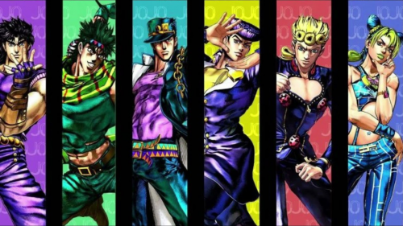
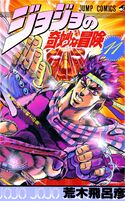

link para outro arquivo html
visite a pagina 2link para enviar um e-mail, define o destinatario
fala cos chefe fia professora disse que nos estamos no nivel de estagiario baby, nem junior ainda...
Quando inicialmente criou JoJo's Bizarre Adventure, Araki imaginava várias ideias centrais as quais queria retratar, tal qual a sucessão entre gerações, mas também capaz de mostrar heróis viajantes. Dali, começou a criar suas ideias para Phantom Blood. Araki nota que o processo de criação de JoJo foi de luta para um aspecto mais espiritual, e que conceitos como amizade tomaram um maior lugar com o tempo.[11] Araki tinha vários temas em mente também, como a ideia de "mistério",[12] e notavelmente o mistério vindo de linhagens sanguíneas. Ele também se perguntou Quem é a pessoa mais forte do mundo? e derivou dessa pergunta temas como imortalidade, busca pela vida ou justiça.[12] Mais fundamentalmente, Araki sentiu que poderia criar algo único dentre as atuais séries na Weekly Shonen Jump com essas ideias. Araki inicialmente só havia planejado três partes,[13] mas posteriormente decidiu continuar com sua série. ESCREVENDO JOJO Araki dá precedência à emoção e o pensamento interior sobre estrutura de enredo, tentando retratar o destino dos protagonistas[14] O Araki segue uma estilo narrativo particular chamado golden road, caracterizado por fortes e determinados protagonistas que constantemente fazem avanços em seus objetivos. Esse golden road é, de acordo com ele, o melhor jeito de envolver os espectadores. Um exemplo de sua golden road é a trama de Stardust Crusaders durante a qual os heróis sempre conseguem derrotar os inimigos em seus caminhos e inexoravelmente chegar no Egito. Não é incomum Araki matar seus protagonistas como Jonathan Joestar mas sente que se a morte serviu um maior propósito ela ainda sim segue a golden road.[15] O Araki acha que o básico da história de suas partes gira em torno de um predicamento particular e gosta de jogar o protagonista rapidamente em dito predicamento antes de continuar sua história dali (ex. Johnny Joestar é paraplégico e quer encontrar um jeito de curar suas pernas).[15] Araki tende a usar uma estrutura de enredo um tanto original para a série. Em vez do formato clássico de torneios da maioria de outras séries do tempo onde os heróis lutavam com inimigos em uma previsível ordem de aumento de poder, Araki adotou um estilo sugoroku (sugoroku é um jogo de tabuleiro similar à cobras e escadas) onde os heróis viajam e encontram inimigos em pontos particulares da jornada e as lutas se tornam mais variadas devido à uma melhor variedade de poderes, e uma ênfase em inteligência em vez de força.[16] Araki também denuncia as limitações de longo-termo de sempre aumentar a força de inimigos em um mangá serializado.[12][17] Araki tira inspiração de uma variedade de fontes para escrever sua série. Ele confirmou várias vezes que ele usa música ocidental para nomear seus personagens, mas também copia designs de uma variedade de fontes como livros de arte, histórias em quadrinhos, o noticiário, ou filmes. Araki extensivamente usa livros em vez de pesquisa online.[18] Um aspecto menos conhecido de sua pesquisa é que ele muitas vezes viaja para os lugares que ele retrata na série para poder ter um melhor sentimento do lugar e coletar detalhes que uma pesquisa online não daria. Seu primeiro tanto Ryosuke Kabashima o encorajou à ver filmes para inspiração e também viajar.[19] Kabashima notavelmente coagiu Araki à viajar para o Egito para depois o retratar em Stardust Crusaders.[20] Araki mais tarde iria manter esse hábito e foi à Itália para Vento Aureo[21] e foi para uma instituição correcional na Florida para receber inspiração para Prisão Green Dolphin Street,[22][23] Ele também foi em várias longas jornadas nos Estados Unidos e no Japão para melhor escrever Steel Ball Run também.[24] Seu hábito de viajar para estudar lugares se estendeu para lugares individuais como um hospital ou uma drogaria.[25] Araki faz um ponto de nunca descansar na sua glória e sempre achar novas ideias. Por exemplo, Araki estava descontente que ele havia chegado em um cume com Stone Ocean em termos de ideia e tinha decidido apagar a continuidade original e revisitar suas ideias velhas em uma segunda continuidade.[26] Sua vontade de sempre mudar também é notável na sua arte (todavia ele explica como evitar desenhar artes velhas do que mudança deliberada).[27] O traço de Araki mudou consideravelmente durante os anos, embora ele sempre manteve ideias fundamnetais sobre sua arte tais como suas poses dramáticas e representação de um corpo humano ideal. Por exemplo, heróis musculosos eram populares nos anos 80 então Araki desenhou esses tipos de personagens (ex. Jonathan), mas como modas vão, Araki mudou para personagens com aparência mais normal como Giorno, um tipo de personagem bonito e mais magro.[11][28] Os efeitos sonoros incomuns que Araki insere em suas páginas são inspiradas de filmes de terror e música rock, ligado a acordes assustadores e outros sons produzidos por sintetizadores e mellotrons.[28] Durante sua publicação na revista Weekly Shonen Jump, Araki tentou continuamente trazer ideias únicas, muitas vezes infringindo o que era considerado aceitável para a revista. Araki notavelmente decidiu fazer seu primeiro protagonista um estrangeiro e mata-lo para o trocar, o que era um tabu. Araki também tentou escrever protagonistas femininas para a série, notavelmente com Giorno Giovanna sendo inicialmente achado ser uma garota. Isso seria eventualmente retratado com Jolyne Cujoh, cujo sexo é insistido independente dos pedidos do seu editor. Araki notavelmente achou que seria então aceitável retratar mulheres sendo sujeitas à violência tão intensa quanto a de personagens personagens masculinos.[28][29] Isso levou a vários conflitos dentro da equipe editorial que tentou suavizar a violência e os temas que Araki queria escrever sobre.[30] Uma típica folha de personagem para a série Quando Araki cria um personagem, ele cuidadosamente completa uma folha com informações sobre dito personagem, que inclui suas características fisícas, seus gostos, e informações sobre a vida do personagem como uma potencial família.[31] Araki nota que seu hábito de nomear personagens em honra de bandas e albúns é um simple hobby, e uma forma de respeito aos músicos que ele gosta.[12] Durante seu tempo no Weekly Shonen Jump, Araki tinha a seguinte rotina: Domingos eram gastos procurando ideias, Segundas fazendo o esboço de storyboard para o capítulo. Ele então se encontrava com seu editor e começa a desenhar rascunhos mais elaborados, uma página por vez. Terça, Quarta e Quinta eram gastas terminando de desenhar o capítulo para a publicação da revista Weekly Shonen Jump, Sexta e Sábado eram seus dias de descanso.[32] Essa rotina que Araki seguia estritamente foi feita pelo Kabashima também.[19] Isso notavelmente perimitiu Araki à ficar em forma, e ele era conhecido por sempre ser pontual com seus capítulos.[33] Sua rotina mensal parece ter continuado a mesma que sua rotina semanal, com Sextas e Sábados de descanso. Araki adicionalmente disse que ele acorda às 10 da manhã, começa a trabalhar às 11 da manhã e dá uma pausa ao meio dia e termina seu dia de trabalho também ao meio dia.[34] Araki diz que suas atuais 45 páginas por mês correspondem melhor com seu ritmo natural.[18] Graças à sua rotina estrita, Araki nunca esqueceu um de seus prazos de entrega durante toda sua carreira.[18][33] This content comes from JoJo's Bizarre Encyclopedia (https://jojowiki.com), and must be attributed to its authors if you are using it on another wiki or web page, as specified in the license.
topo pagina(link dentro da pagina)  seção, um dos conteudos dentro do site
o conteudo principal
um conteudo adicional (de lado) que apoia o conteudo principal
onde vai colocar o menu